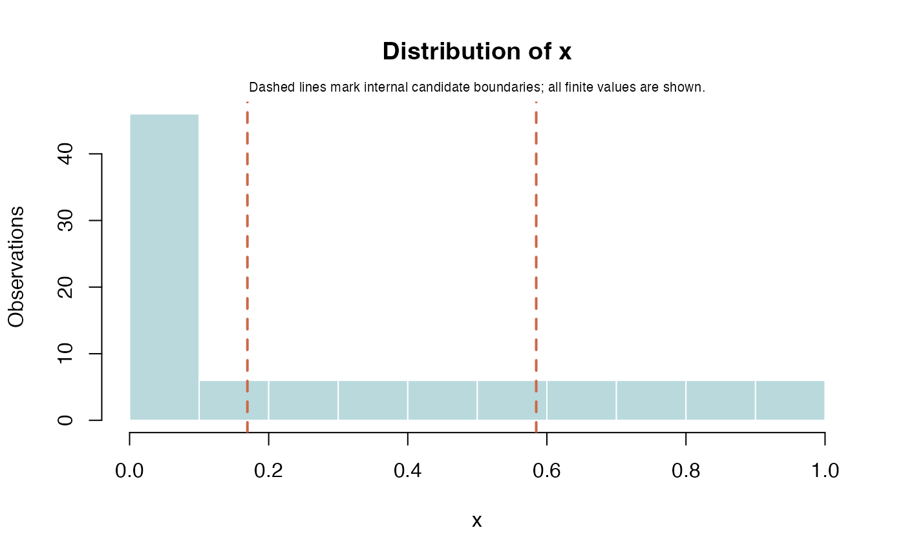
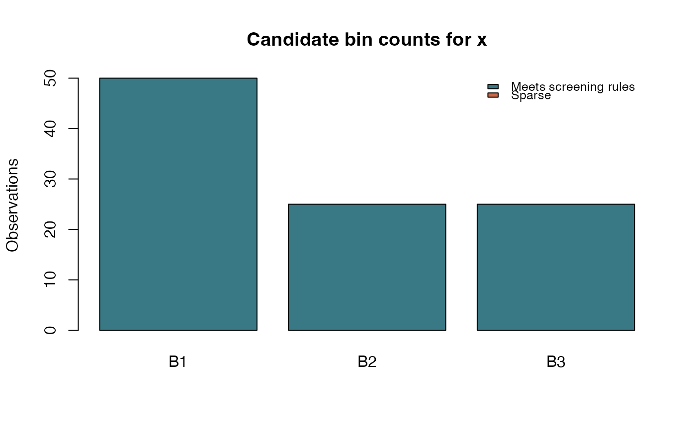

Inspect a Numeric Variable Before Binning
bin_diagnose.RdSummarize a numeric column and inspect one candidate binning scheme. No outcome variable or model is required. The input data are not modified.
Usage
bin_diagnose(data, variable, bins = 4L,
method = c("quantile", "equal_width", "custom"),
breaks = NULL, separate_zero = FALSE,
min_count = 20L, min_prop = 0.01, warn = TRUE)Arguments
- data
A data frame, including data-frame subclasses.
- variable
One quoted column name. The column must be a plain numeric or integer vector, without a class or dimensions. Convert factors, dates, or labelled values explicitly after deciding their intended numeric meaning.
- bins
Requested number of interval bins, an integer from 2 to 1000. Ignored for custom boundaries. With
separate_zero = TRUE, this is the number of positive-value intervals, in addition to a zero category if present.- method
"quantile"uses equally spaced probabilities and R's type-7 sample quantiles."equal_width"divides the observed range evenly."custom"uses supplied numeric boundaries.- breaks
For custom bins only, at least two finite, strictly increasing numeric boundaries covering the finite values to be binned. Include endpoints. When zeros are separate, boundaries only need to cover positive values.
- separate_zero
Create a category for exact zeros before computing boundaries from positive values. Requires nonnegative data. No rounding or near-zero tolerance is applied. No zero category is added if no zeros occur.
- min_count
Flag bins with fewer than this many observations. Default 20.
- min_prop
Flag bins with a smaller proportion of all finite observations than this value. Default 0.01. A bin is sparse when either rule is triggered.
- warn
Emit diagnostic notes as warnings. With
FALSE, notes are still stored and displayed by the print method. Invalid inputs always produce errors.
Details
Missing values (including NaN) and infinite values are counted separately and excluded from all distribution summaries and candidate bins. At least one finite value is required. Bin proportions use all finite values as their denominator, including zeros when a separate zero category is used.
Identical values are never split across bins. Repeated candidate boundaries are collapsed, so quantile bins can be unequal in size or fewer than requested. Interpolated quantiles can also leave empty intervals when unique values are few. Empty intervals are retained. A constant variable produces one singleton bin for automatic methods. Custom boundaries are retained even for constant data.
Intervals are right-closed, with the first interval also left-closed. Zero assignment happens first when requested. Full-precision boundaries are returned; printed values may be rounded. Bin identifiers remain unique even when displayed boundaries look identical.
Skewness is the population-moment descriptive statistic \(m_3 / m_2^{3/2}\), not a bias-corrected estimator or a significance test. It is undefined (NA) for constant variables. Overall and within-bin standard deviations use the sample definition, and are NA for single observations.
Sparse-bin rules are adjustable descriptive screens. Counts of dyad-year rows
are not counts of independent cases. This function does not choose an optimal
binning scheme, test zero inflation, fit models, quantify information loss, or
establish predictive or causal validity. Boundaries describe the supplied sample;
use bin_apply to apply the saved boundaries to other observations
without recalculating them.
The plain-language assessment reports zero prevalence, collapsed boundaries, the largest interval's share, the widest observed within-bin range, and empty or sparse categories. The interval balance calculation excludes a dedicated zero category; the range percentage uses the full finite sample's observed range. A largest interval share of at least 80 percent triggers a suggestion to compare schemes if balanced groups matter. This is a descriptive prompt, not a test or an optimality rule. Substantive meanings of values are supplied by the user.
Value
A bin_diagnosis list with the following components.
- summary
One-row data frame containing counts, zero proportion, unique values, range, mean, median, standard deviation, IQR, and skewness.
- percentiles
Probabilities and corresponding type-7 quantiles.
- bins
Bin identifiers, boundaries and closure indicators, singleton indicator, counts, proportions, sparse flags, and observed within-bin summaries. Empty bins have NA observed summaries.
- assignments
Factor aligned to the original rows, with NA for excluded values.
- candidate_breaks, breaks
Boundaries before and after deduplication, respectively. A separate zero category is not included in these vectors.
- requested_bins, actual_interval_bins, occupied_bins
Requested interval count, retained interval count, and occupied categories including a separate zero.
- notes
Human-readable diagnostic notes.
- assessment
Character vector of evidence-based descriptive guidance, displayed before the detailed tables by the print method.
- values
Original numeric vector, used for plotting.
- call, variable, method, separate_zero, min_count, min_prop
Call and settings.
Examples
example_data <- data.frame(x = c(rep(0, 40), seq(0.01, 1, length.out = 60), NA))
d <- bin_diagnose(example_data, "x", bins = 4, warn = FALSE)
d
#> binwise diagnosis of x
#>
#> Assessment
#> * The assessment uses 100 finite observations; 1 missing and 0 infinite values are excluded.
#> * Exact zeros account for 40.00% of finite observations. If zero has a distinct substantive meaning, consider separate_zero = TRUE.
#> * Repeated boundaries reduce 4 requested intervals to 3. Equal values stay together; requesting more quantile bins may not produce equally sized groups.
#> * The largest interval, B1, contains 50 observations (50.00% of observations assigned to intervals). Compare this balance with your intended use of the categories.
#> * The widest observed within-bin range is in B2, from 0.1778 to 0.58051 (40.27% of the full observed range). If distinctions within that range matter, consider additional or custom boundaries there.
#>
#> 100 finite observations out of 101 rows
#> 1 missing; 0 infinite; 61 unique finite values
#> 40 exact zeros ( 40 % of finite values)
#> min median mean max sd skewness
#> 0 0.1694 0.303 1 0.3362 0.6553
#>
#> Percentiles
#> probability value
#> 0.00 0.0000
#> 0.01 0.0000
#> 0.05 0.0000
#> 0.10 0.0000
#> 0.25 0.0000
#> 0.50 0.1694
#> 0.75 0.5847
#> 0.90 0.8339
#> 0.95 0.9169
#> 0.99 0.9834
#> 1.00 1.0000
#>
#> Candidate bins using quantile
#> Requested 4 interval bins; created 3 interval bins and 0 zero category
#> bin lower upper n proportion sparse
#> B1 0.0000 0.1694 50 0.50 FALSE
#> B2 0.1694 0.5847 25 0.25 FALSE
#> B3 0.5847 1.0000 25 0.25 FALSE
#> Intervals include the upper boundary; the first also includes the lower boundary.
#>
#> Notes
#> * Excluded 1 missing values (NA/NaN) and 0 infinite values.
#> * Requested 4 interval bins; only 3 distinct intervals are possible with these boundaries. Repeated boundaries were collapsed; tied values stay together.
#>
#> These diagnostics describe the supplied data and candidate boundaries.
plot(d)

plot(d, type = "bins")

positive <- bin_diagnose(example_data, "x", bins = 3,
separate_zero = TRUE, warn = FALSE)
positive$bins
#> bin lower upper left_closed right_closed singleton n proportion sparse
#> 1 Zero 0.00 0.00 TRUE TRUE TRUE 40 0.4 FALSE
#> 2 B1 0.01 0.34 TRUE TRUE FALSE 20 0.2 FALSE
#> 3 B2 0.34 0.67 FALSE TRUE FALSE 20 0.2 FALSE
#> 4 B3 0.67 1.00 FALSE TRUE FALSE 20 0.2 FALSE
#> sd mean observed_max observed_min
#> 1 0.00000000 0.0000000 0.0000000 0.0000000
#> 2 0.09926981 0.1694068 0.3288136 0.0100000
#> 3 0.09926981 0.5050000 0.6644068 0.3455932
#> 4 0.09926981 0.8405932 1.0000000 0.6811864
custom <- bin_diagnose(example_data, "x", method = "custom",
breaks = c(0, 0.1, 0.5, 1), warn = FALSE)
custom$assignments
#> [1] B1 B1 B1 B1 B1 B1 B1 B1 B1 B1 B1 B1 B1 B1 B1
#> [16] B1 B1 B1 B1 B1 B1 B1 B1 B1 B1 B1 B1 B1 B1 B1
#> [31] B1 B1 B1 B1 B1 B1 B1 B1 B1 B1 B1 B1 B1 B1 B1
#> [46] B1 B2 B2 B2 B2 B2 B2 B2 B2 B2 B2 B2 B2 B2 B2
#> [61] B2 B2 B2 B2 B2 B2 B2 B2 B2 B2 B3 B3 B3 B3 B3
#> [76] B3 B3 B3 B3 B3 B3 B3 B3 B3 B3 B3 B3 B3 B3 B3
#> [91] B3 B3 B3 B3 B3 B3 B3 B3 B3 B3 <NA>
#> Levels: B1 B2 B3